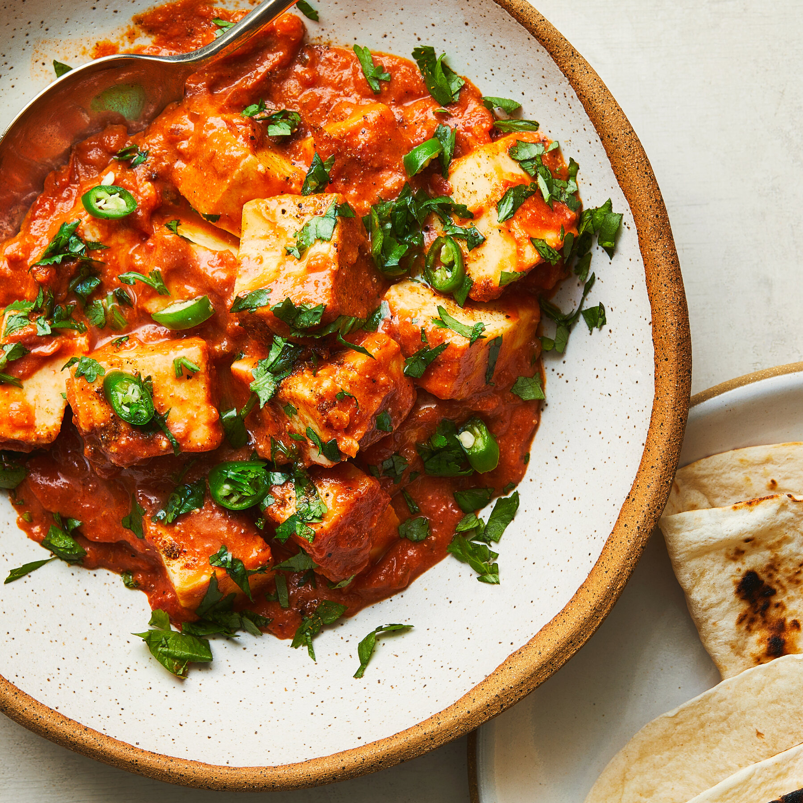

Butter Paneer is a rich, creamy North Indian dish featuring soft paneer cubes in a velvety tomato-butter sauce, infused with aromatic spices for a comforting meal.
Key Ingredients
Marinate
- 250g paneer (cubed)
- 1/2 cup yogurt
- 1 tbsp ginger-garlic paste
- 1/2 tsp tumeric
- 1/2 tsp indian spice called garam masala
- 1/2 tsp cumin
- salt to taste
Sauce
- 3 tbsp butter
- 1 onion (finely chopped)
- 2 tomatoes (pureed)
- 1/2 cup heavy cream
- 1 tbsp garam masala
- 1 tbsp cumin
- 1 tbsp coriander powder
- salt to taste and fresh cilantro for granish
Instructions
- Marinate the Paner: In a bowl, combine yogurt, ginger-garlic paste, turmeric, garam masala, cumin powder, and salt. Add paneer cubes, gently coat them, and let them marinate for 30 minutes at room temperature.
- Sauté the Paneer (Optional) Heat 1 tbsp butter in a pan over medium heat. Lightly fry the marinated paneer cubes for 2-3 minutes until slightly golden on the edges, then set aside. (You can skip this step if you prefer softer paneer.)
- Prepare the Sauce: In the same pan, add the remaining 2 tbsp butter. Sauté the onion until soft and golden, about 5 minutes. Add tomato puree, garam masala, cumin, coriander powder, red chili powder, and salt. Cook for 8-10 minutes, stirring occasionally, until the sauce thickens and the oil starts to separate.
- Add Cream and Paneer: Stir in the heavy cream, mixing well to create a smooth, creamy sauce. Add the paneer cubes (fried or raw), gently stirring to coat them in the sauce. Simmer for 5 minutes to let the flavors meld.
- Garnish and Serve: Garnish with fresh cilantro and serve hot with naan, roti, or steamed rice.